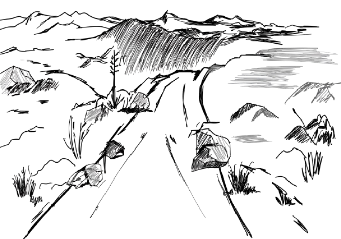

자전거에 관한 명상
이동순
자전거를 타고 들길을 가네
길은 어제 내린 비로 온통 흙탕이네
하지만 나는 이 길을 피할 도리가 없네
되돌아갈 수야 없지 않은가
나는 힘껏 페달을 밟아
흙탕으로 들어서네


흙물이 튀어 옷을 적시고 등에까지 튀어 오르네
까짓 흙탕쯤이야 털고 씻으면 되지 않나

겨우 진창길 빠져 나오니
울퉁불퉁 돌길이네
기우뚱한 내 그림자
바로 세우고
나는 더욱 힘껏 페달을 밟아가네
자전거를 타고 들길을 가네